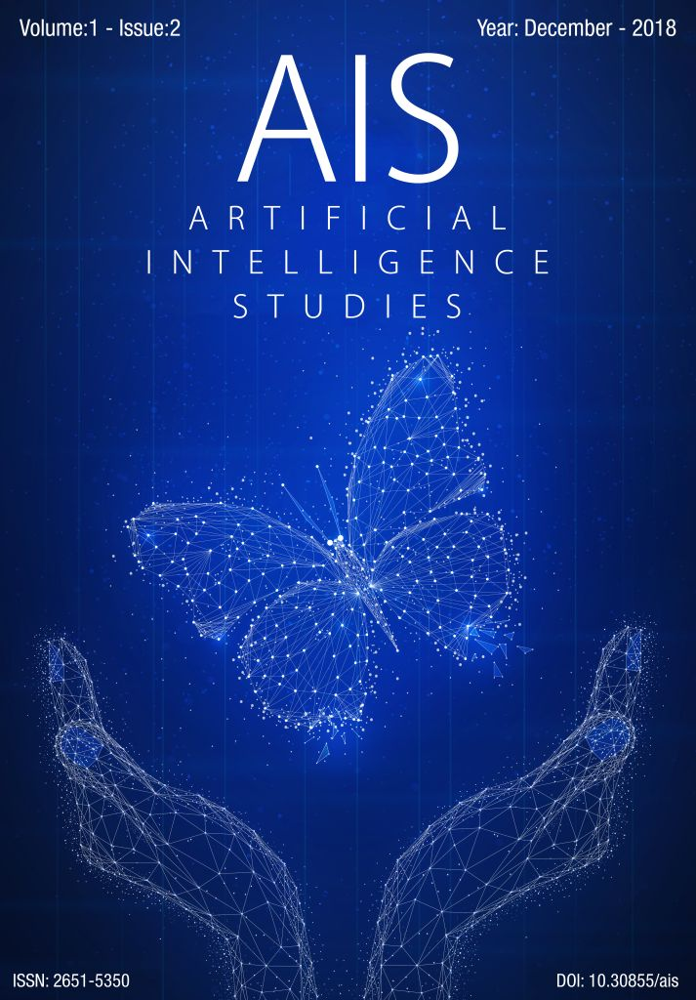

Skip to main content
Skip to main navigation menu
Skip to site footer
Anasayfa
Arşivler
Hakkında
Dergiler Hakkında
Editör Ekibi
Gönderiler
İletişim
Kayıt ol
Ara
Ara
Kayıt ol
Giriş yap
Anasayfa
/
Arşivler
Aralık 2021
Vol 4 No 2 (2021)
Haziran 2021
Vol 4 No 1 (2021)
Haziran 2020
Vol 3 No 1 (2020)
Aralık 2019
Vol 2 No 2 (2019)
Haziran 2019
Vol 2 No 1 (2019)

Aralık 2018
Vol 1 No 2 (2018)
Haziran 2018
Vol 1 No 1 (2018)
ISSN-e:
2651-5350
Yeni Gönderi
Indexes and Platforms
Hakkında
Okuyanlar
Yazarlar
Kütüphane Personelleri